⚡ XRPL POS
Kompletní uživatelský manuál
Od instalace peněženky Xaman po první platbu
Verze 1.0 | 2026 | www.xrplpos.cz
1. Úvod a přehled systému
2. Instalace peněženky Xaman
2.1 Stažení aplikace
2.2 Vytvoření nové peněženky
2.3 Záloha seed phrase
3. Nastavení Xaman API (pro obchodníky)
3.1 Přihlášení do Developer Console
3.2 Vytvoření aplikace a získání API klíčů
3.3 Nastavení API klíčů a adresy peněženky v XRPL POS
4. Instalace a spuštění XRPL POS
4.1 Otevření aplikace
4.2 Nastavení XRP adresy
4.3 Nastavení měny a dalších parametrů
4.4 Aktivace licence
5. Přijímání plateb
5.1 Zadání částky
5.2 Generování QR kódu
5.3 Platba zákazníkem
5.4 Potvrzení platby
6. Historie plateb a statistiky
7. Řešení problémů
8. Podpora
XRPL POS je webová pokladna umožňující obchodníkům přijímat platby v kryptoměně XRP přímo na jejich XRP peněženku. Aplikace nevyžaduje žádnou instalaci — běží přímo v prohlížeči na počítači, tabletu i mobilním telefonu.
Klíčové výhody:
Žádné poplatky za transakce (pouze standardní síťový poplatek XRP ~0.00001 XRP)
Okamžité platby — transakce potvrzena do 3–5 sekund
Automatický převod fiat měn na XRP dle aktuálního kurzu
Podpora měn: CZK, USD, EUR, GBP, HUF, PLN, CHF, JPY
QR kód pro jednoduché skenování peněženkou
Historie plateb s odkazem na blockchain
Co budete potřebovat:
Peněženka Xaman (XUMM) nainstalovaná na mobilu
XRP adresa (vygenerovaná v Xaman, aktivovaná s 2 XRP rezervou)
API klíče z Xaman Developer Console (pro plnou funkčnost)
Přístup k internetu
Xaman (dříve XUMM) je nejrozšířenější self-custody peněženka pro XRP Ledger. Zákazníci ji používají k platbám naskenováním QR kódu, vy jako obchodník ji potřebujete k přijetí plateb na svou XRP adresu.
Xaman je dostupný zdarma pro Android i iOS.
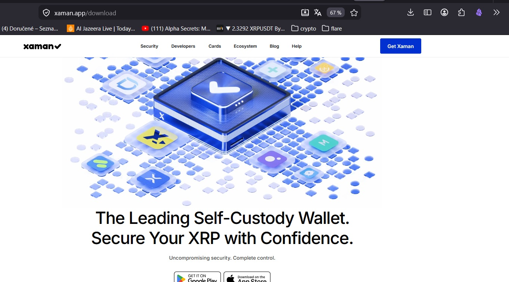
Obr. 1 – Web xaman.app/download — stažení pro Google Play a App Store
Otevřete v prohlížeči mobilu adresu xaman.app/download
Klikněte na "GET IT ON Google Play" (Android) nebo "Download on the App Store" (iOS)
Nainstalujte aplikaci standardním způsobem
💡 TIP: Vždy stahujte Xaman pouze z oficiálního webu xaman.app nebo přímo z obchodu — předejdete podvodným aplikacím.
Otevřete aplikaci Xaman
Zvolte "Create a new account"
Aplikace vygeneruje vaši jedinečnou XRP adresu (začíná písmenem "r")
Tuto adresu zkopírujte — budete ji potřebovat v nastavení XRPL POS
⚠️ Nová peněženka potřebuje aktivaci minimálně 2 XRP. Bez tohoto zůstatku nelze přijímat platby.
Xaman vás vyzve k záloze "Secret Numbers" (24 čísel)
Zapište tato čísla na papír a uložte na bezpečném místě
Nikdy je neposílejte elektronicky ani nikomu nesdělujte
⚠️ Bez zálohy seed phrase nelze obnovit přístup k peněžence při ztrátě telefonu!
Xaman API umožňuje XRPL POS posílat platební požadavky přímo do peněženky zákazníka a sledovat stav platby v reálném čase. Bez API klíčů aplikace funguje, ale bez push notifikací.
Otevřete v prohlížeči apps.xaman.dev
Klikněte na tlačítko "Sign in with Xaman"
Zobrazí se QR kód pro přihlášení — naskenujte ho mobilní aplikací Xaman
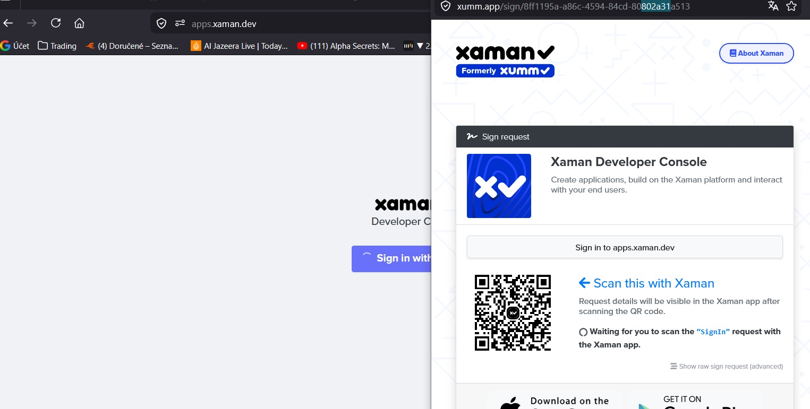
Obr. 2 – Přihlašovací obrazovka Xaman Developer Console s QR kódem
V aplikaci Xaman potvrďte Sign In požadavek
Prohlížeč vás automaticky přihlásí
Po prvním přihlášení uvidíte prázdný dashboard bez aplikací.
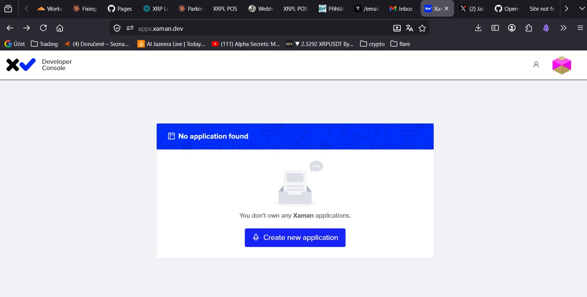
Obr. 3 – Dashboard bez aplikací — klikněte na "Create new application"
Klikněte na tlačítko "Create new application"
Vyplňte název aplikace (např. "XRPL POS Prodejna")
Vyplňte popis aplikace
Volitelně nahrajte logo (čtvercový obrázek)
Klikněte "Create application"
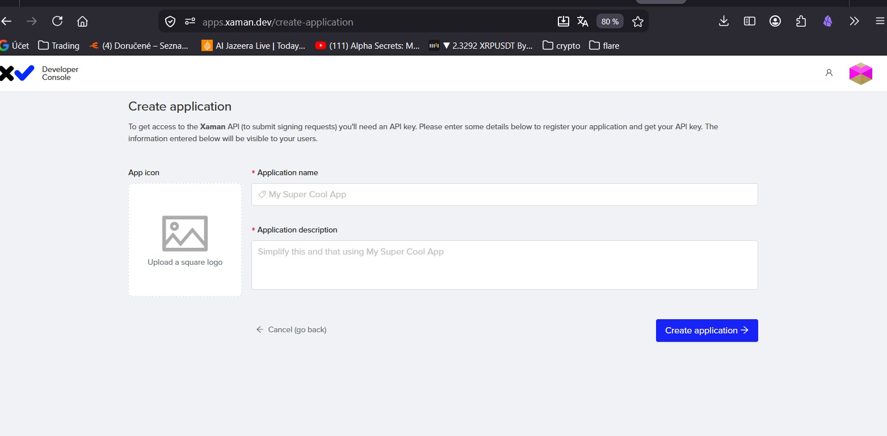
Obr. 4 – Formulář pro vytvoření nové Xaman aplikace
Po vytvoření se zobrazí vaše API klíče:
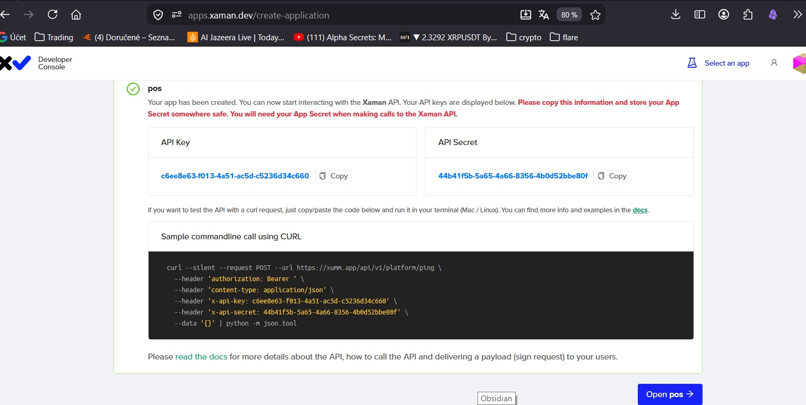
Obr. 5 – API Key a API Secret po úspěšném vytvoření aplikace
⚠️ API Secret se zobrazí POUZE jednou! Ihned ho zkopírujte a bezpečně uložte.
API Key — veřejný identifikátor (lze kdykoliv zobrazit v nastavení)
API Secret — tajný klíč (po zavření stránky není znovu viditelný)
V nastavení aplikace (Settings) můžete kdykoliv zobrazit API Key a případně vygenerovat nový API Secret:
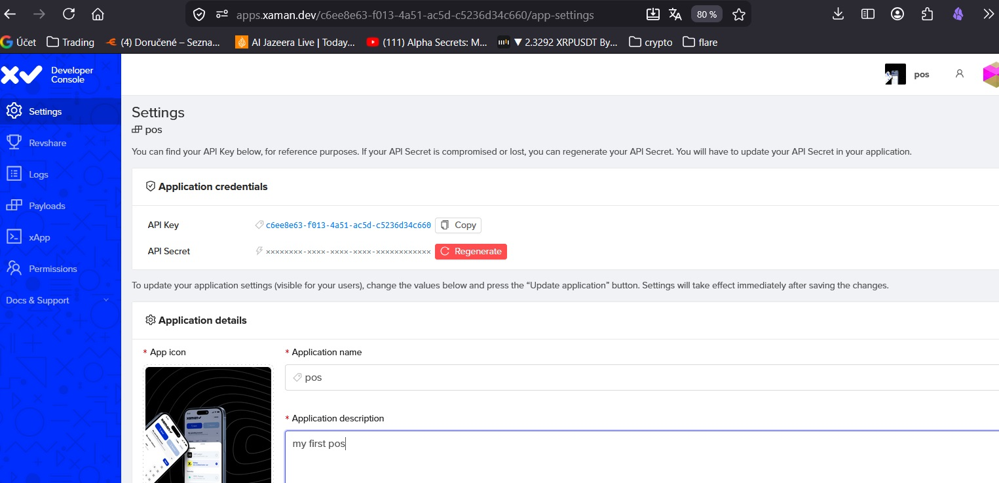
Obr. 6 – Nastavení aplikace v Xaman Developer Console
Po získání API klíčů z Xaman Developer Console je nyní potřeba zadat vše do nastavení XRPL POS pokladny. Celé nastavení se provádí na jedné stránce.
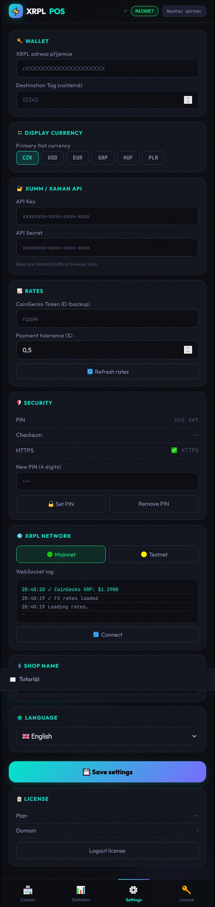
Obr. 7 – Kompletní nastavení XRPL POS
Vaše XRP adresa je identifikátor vaší peněženky na blockchainu. Na tuto adresu budou přicházet všechny platby od zákazníků.
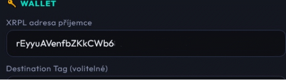
Obr. 8 – Sekce Wallet v nastavení XRPL POS s vyplněnou adresou příjemce
V XRPL POS přejděte do záložky "Nastavení" (ikona ozubeného kola dole)
V sekci "🔑 WALLET" najdete pole "XRP adresa příjemce"
Otevřete aplikaci Xaman na mobilu a zkopírujte svou XRP adresu
Adresa vždy začíná písmenem "r" — například: rEyyuAVenfbZKkCWb6…………...
Vložte adresu do pole "XRPL adresa příjemce"
Volitelně vyplňte "Destination Tag" — používá se při platbách na burzy
⚠️ Zadejte adresu přesně — chybná adresa způsobí, že platby nepřijdou na váš účet!
💡 TIP: Adresu kopírujte přímo z aplikace Xaman, nikdy ji nepřepisujte ručně.
API klíče propojí pokladnu s vaší Xaman aplikací. Zákazníkovi se po generování QR kódu zobrazí push notifikace přímo v jeho Xaman peněžence.
V nastavení najděte sekci "🔑 XUMM / XAMAN API"
Do pole "API Key" vložte API Key zkopírovaný z apps.xaman.dev
Do pole "API Secret" vložte API Secret (uložili jste ho v předchozím kroku)
💡 TIP: Klíče jsou uloženy pouze lokálně ve vašem prohlížeči. Nikdy nejsou odesílány na žádný server.
Po vyplnění všech polí scrollujte dolů na velké tyrkysové tlačítko "💾 Uložit nastavení"
Klikněte na tlačítko — nastavení se uloží do prohlížeče
Aplikace se automaticky připojí k XRPL síti
V sekci "XRPL NETWORK" → WebSocket log uvidíte zprávy "✓ WS připojeno" a "✓ CoinGecko XRP: $X.XX"
⚠️ Pokud po uložení nevidíte zelené připojení v WebSocket logu, zkontrolujte správnost XRP adresy a internetové připojení.
Nastavení XRPL POS obsahuje tyto sekce:
🔑 WALLET — Vaše XRP adresa a Destination Tag
💱 DISPLAY CURRENCY — Primární fiat měna (CZK, USD, EUR, GBP, HUF, PLN)
🔑 XUMM / XAMAN API — API Key a API Secret z Xaman Developer Console
📊 RATES — CoinGecko Token ID a tolerance platby (%)
🔒 SECURITY — PIN ochrana Vaší pokladny, kontrolní součet, HTTPS
🌐 XRPL NETWORK — Mainnet / Testnet, WebSocket log
🏪 SHOP NAME — Název vaší provozovny
🌍 LANGUAGE — Jazyk aplikace (42 jazyků)
Otevřete prohlížeč (Chrome, Firefox, Edge nebo Safari)
Přejděte na adresu: www.xrplpos.cz
Aplikace se načte automaticky — nevyžaduje instalaci
💡 TIP: Pro rychlejší přístup si přidejte aplikaci na domovskou obrazovku mobilu: v prohlížeči klikněte na "Přidat na plochu" nebo "Add to Home Screen".
Podrobný postup nastavení XRPL adresy je popsán v kapitole 3.3 — Krok 1.
V sekci "Display Currency" vyberte vaši primární fiat měnu:
CZK — Česká koruna
USD — Americký dolar
EUR — Euro
GBP — Britská libra
HUF — Maďarský forint
PLN — Polský zlotý
V sekci "Rates":
CoinGecko Token ID — výchozí hodnota "ripple" je správná, neměňte
Payment tolerance — doporučená hodnota 0,5 % (platby do 0,5 % pod požadovanou částkou jsou přijaty)
V sekci "Security":
PIN — nastavte 4místný PIN pro ochranu přístupu k pokladně
Checksum — kontrolní číslo vaší adresy pro ověření
Přejděte do záložky "Licence" (ikona klíče dole)
Zadejte váš licenční klíč
Klikněte "Aktivovat licenci"
Po aktivaci se zobrazí váš plán a doména
💡 TIP: Bez licence funguje aplikace v trial režimu 14 dní. Po expiraci je potřeba zakoupit licenci https://www.xrplpos.cz/pos/license.html
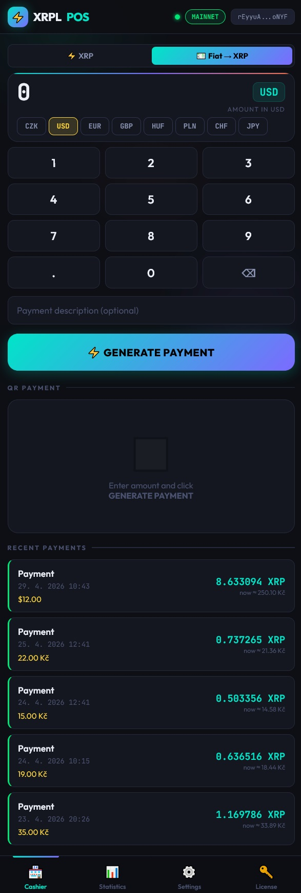
Obr. 9 – Hlavní obrazovka pokladny XRPL POS
Pomocí numerické klávesnice zadejte požadovanou částku
V řadě tlačítek vyberte měnu (CZK, USD, EUR...)
Aplikace automaticky zobrazí přepočet na XRP dle aktuálního kurzu
Volitelně vyplňte popis platby
⚡ XRP — zadání částky přímo v XRP
💶 Fiat → XRP — zadání v fiat měně s automatickým přepočtem
Po zadání částky klikněte na "GENERATE PAYMENT"
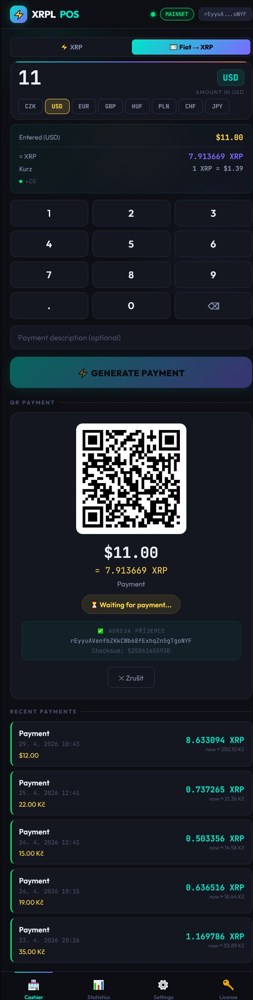
Obr. 10 – Vygenerovaný QR kód platby
QR kód obsahuje adresu, částku, tag a popis
Zobrazí se stav "⏳ Waiting for payment..."
Pod QR kódem vidíte adresu příjemce s kontrolním součtem
Zákazník otevře Xaman na mobilu
Naskenuje QR kód
Zkontroluje detail platby a potvrdí
💡 TIP: Zákazník může použít jakoukoli XRPL peněženku — Xaman, GemWallet, Crossmark apod.
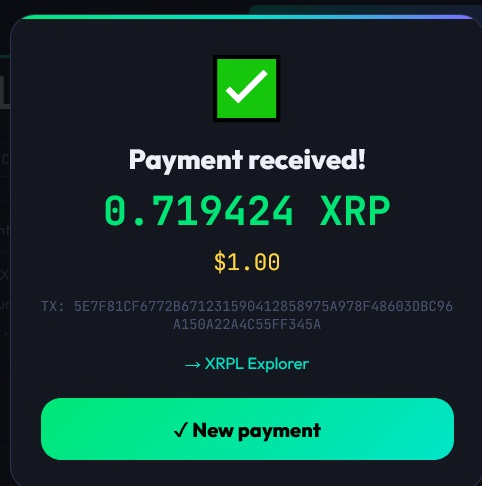
Obr. 11 – Potvrzení úspěšné platby
✅ "Payment received!" — platba přijata
TX hash pro ověření na XRPL Explorer
"New payment" — okamžitě přijmout další platbu
V dolní části hlavní obrazovky je seznam posledních přijatých plateb. Každý záznam zobrazuje datum, čas, fiat částku a hodnotu v XRP.
Záložka "Statistiky" zobrazuje celkový obrat, počet transakcí, průměrnou a nejvyšší platbu. Data lze exportovat do CSV pro účetnictví.
Zkontrolujte připojení k internetu
Klikněte na "Refresh rates" v nastavení
Počkejte minutu a zkuste znovu
Zkontrolujte internetové připojení
V nastavení klikněte "Connect"
Ověřte správnost XRPL adresy
Ověřte transakci na livenet.xrpl.org pomocí TX hashe
Zkontrolujte XRPL adresu v nastavení
Zkontrolujte nastavení Payment tolerance
Ověřte správnost API Key a API Secret v nastavení
Zkontrolujte platnost aplikace v apps.xaman.dev
V případě ztráty API Secret vygenerujte nový v Xaman Developer Console
Jsme tu pro vás. V případě technických problémů nebo dotazů nás kontaktujte:
📧 Telegram: https://t.me/XrplPosBot
https://tawk.to/chat/69f625a83eaf161c36a79a79/1jnko66kv
© 2026 XRPL POS | Všechna práva vyhrazena | @xrplpos.cz